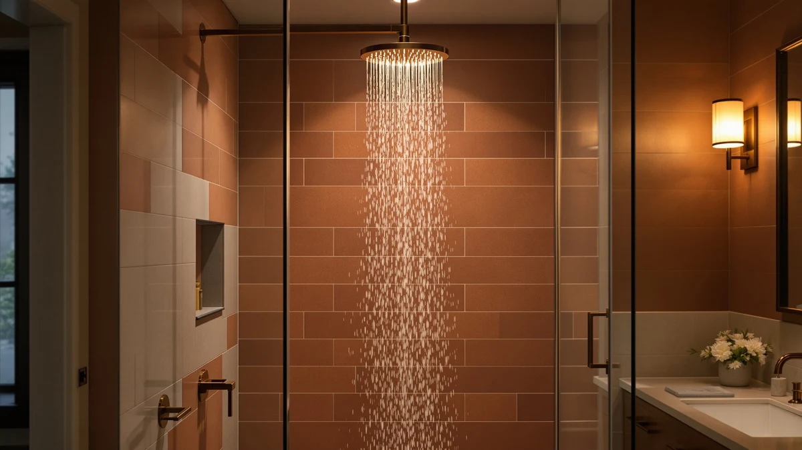

Best Handheld vs Fixed Shower Head (2026) | Best Shower Heads
Prices and picks verified as of August 2026. Independent, reader-supported reviews.


Things to Know Before You Buy
- A handheld pulls free on a hose, so you can rinse tight spots, kids, and pets, and cleaning the tub gets far easier.
- A fixed head bolts to the wall or ceiling and gives you a steady, hands-free stream with fewer parts that can leak.
- Handheld models usually cost a few dollars more than a comparable fixed head because of the added hose and bracket.
- Combo units mount a fixed head and a handheld on the same arm, so you do not have to choose only one.
- Both styles thread onto the same standard 1/2-inch shower arm, so most swaps take about ten minutes without a plumber.
The handheld vs fixed shower head question comes down to how you actually use your shower, not which one looks better on a showroom wall. A handheld sits in a cradle and pulls free on a hose, so you can aim the water wherever you want. A fixed head bolts to the wall or ceiling and points in one direction, giving you a hands-free stream you step into.
Both styles have improved a lot over the past few years, with better spray plates, easier descaling, and finishes that shrug off water spots. You can spend under $15 or over $100 on either one. This guide walks through where each style wins so you can match the sprayer to your bathroom, your cleaning habits, and the people who share the shower.
Quick Answer
In the handheld vs fixed shower head matchup, a handheld wins for flexibility, cleaning, and households with kids, pets, or anyone who showers seated. A fixed head wins if you want a simple, hands-free rain-style soak with fewer parts to maintain. If you cannot decide, a combo unit gives you both on one arm.
What is Handheld?
A handheld shower head is the one you can lift off the wall. The head connects to a flexible metal or nylon hose, usually four to six feet long, and rests in a cradle or on a slide bar when you are not holding it. You point the water where you want it instead of standing in a fixed stream.
That freedom pays off in a lot of everyday moments. You can rinse shampoo out of long hair without craning your neck, wash a dog in the tub, spray down soap scum after a shower, or help a child rinse off without soaking the whole bathroom. Many handhelds also add several spray modes on a dial, from a soft rain to a tight massage jet, so you can switch feel on the fly.
The tradeoffs are small but real. The hose adds a part that can kink or wear out over five to ten years, and a handheld left in its cradle points slightly downward, so a tall user may still reach up to reposition it. For most people those are minor prices to pay for the reach and control.
What is Fixed Shower Head?
A fixed shower head is the style most bathrooms ship with. It screws directly onto the shower arm coming out of the wall, or onto a ceiling drop for a rain setup, and it stays put. You set the angle once, then step into the spray and shower hands-free.
Because a fixed head has no hose and no moving cradle, it keeps a clean look on the wall and gives you fewer connection points where water can escape. Wide rain-style versions, like the Veken 14-inch and the BRIGHT SHOWERS rain head, spread a broad, soft curtain of water over your whole body, which is the closest thing to a spa soak you can get at home.
The limit is right there in the name. A fixed head only sprays where you aimed it, so rinsing your feet, cleaning the tub walls, or bathing a squirming toddler means moving yourself rather than the water. If you value a simple, low-maintenance stream over reach, that constraint is easy to live with.
Head-to-Head: Build Quality & Durability
On raw durability, the fixed shower head has a structural edge. It has one solid connection to the shower arm and no hose, so there are fewer seams, fewer O-rings, and fewer spots where a leak can start. A decent fixed head can run a decade with nothing more than the occasional vinegar soak to clear mineral scale from the nozzles.
A handheld carries more parts, and each one ages. The hose is the weak link. Cheaper nylon-jacketed hoses can crack or kink after a few years, while braided stainless hoses on models like the BRIGHT SHOWERS handheld hold up longer. The head-to-cradle joint and the swivel connector also see daily wear as you lift and reseat the wand.
Materials matter more than category, though. A chrome-plated ABS plastic head of either type resists corrosion and stays light, while solid brass fittings feel sturdier and last longer at a higher price. When you compare a handheld and a fixed head at the same price, expect similar spray-plate quality, and judge the handheld mostly on its hose. Rubber nozzle tips on both styles help, since you can rub away limescale with a thumb instead of scrubbing.
Head-to-Head: Price & Value
Price is close enough that it rarely decides the handheld vs fixed shower head choice on its own. Both styles start cheap: you can find a basic fixed head or a budget handheld like the BRIOUT for around $15. At the same tier, a handheld usually runs a few dollars more because you are also paying for the hose and bracket.
Spend more and the gap stays small. A well-built handheld such as the BRIGHT SHOWERS High Pressure sits near $51, while a wide fixed rain head like the Veken lands around $80. The best value for many buyers is a combo unit like the Hotel Spa AquaCare near $40, which bundles a fixed head and a handheld so you are not paying twice to get both.
Head-to-Head: Use Experience
Day to day, the difference really shows up in how the water meets you. A fixed rain head gives you the calmer ritual. You step under it, the water falls straight down over your head and shoulders, and both hands stay free to lather up. For a slow morning or an evening wind-down, that steady overhead soak is hard to beat.
A handheld trades that stillness for control. You can drop the spray to your feet, aim it at your lower back after a workout, or pull it close for a targeted massage jet. Households feel the difference fastest: rinsing a toddler's hair, spraying down a muddy dog, or helping a parent who showers on a bench all get easier when you move the water instead of the person.
Cleaning is where the handheld clearly pulls ahead. You can rinse conditioner off the tub walls, chase soap scum into the drain, and spray out the corners in seconds, jobs that make you contort under a fixed head. The fixed head answers back with simplicity, since there is no hose to coil, drip, or knock loose when you reach for the shampoo.
When to Choose Handheld
Pick a handheld when your shower does more than get you clean. If you bathe young kids, wash a dog, or share the bathroom with anyone who showers seated or uses a shower bench, the reach of a handheld changes the whole routine. You bring the water to them instead of asking them to move into it.
It is also the better call if you clean your own tub, rinse long or thick hair, or want a targeted massage jet on sore muscles. Renters benefit too, since a handheld like the BRIOUT installs in minutes and unscrews just as fast when you move. Choose a handheld when flexibility and easy cleaning matter more than keeping the wall bare and simple.
When to Choose Fixed Shower Head
Lean toward a fixed head when you want your shower to stay simple. If most of your showers are solo, you shower standing, and you value a clean wall with nothing to coil or drip, a fixed head fits. It gives you a steady, hands-free stream and one solid connection with fewer parts that can fail over time.
A wide fixed rain head, like the Veken 14-inch or the BRIGHT SHOWERS rain head, is the pick if you are after that overhead spa soak where water falls straight down over your head and shoulders. It also suits adults-only bathrooms with no kids or pets to rinse and no mobility needs to plan around. Choose a fixed head when low maintenance and a calm, consistent stream outweigh the reach of a wand.
Our Top Picks
Whichever way you land on the handheld vs fixed shower head question, here are three models we would point you toward first. One leads with handheld flexibility, one covers you with a wide fixed rain spray, and one combo gives you both on a single arm.

Editor’s Pick
BRIGHT SHOWERS High Pressure Shower
Our favorite handheld here, with a braided hose, strong pressure, and the reach that makes cleaning and rinsing easy.
$50.98
Check Price on Amazon
Best Value
BRIGHT SHOWERS Rain Shower Head
A wide fixed rain head for anyone who wants a simple, hands-free overhead soak with fewer parts to maintain.
$99.99
Check Price on Amazon
Premium Choice
Hotel Spa AquaCare High Pressure
A combo that mounts a fixed rain head and a detachable handheld on one arm, so you never have to pick a side.
$39.99
Check Price on AmazonIs a handheld or fixed shower head better?
Neither one wins for everyone.
Can you switch a fixed shower head to a handheld?
Yes.
Frequently Asked Questions
Is a handheld or fixed shower head better?
Neither one wins for everyone. A handheld is better if you want to rinse tight spots, bathe kids or pets, or shower while seated, and it makes cleaning the tub much easier. A fixed head is better if you want a simple hands-free stream with fewer parts to maintain. A combo unit gives you both on one arm.
Can you switch a fixed shower head to a handheld?
Yes. Both styles thread onto the same standard 1/2-inch shower arm, so you can swap a fixed head for a handheld in about ten minutes with no plumber. You unscrew the old head, wrap the threads with plumber's tape, then screw on the handheld bracket and hose.
Do handheld shower heads have less water pressure than fixed ones?
Not by much. Both styles cap at 2.5 gallons per minute under federal rules, so the pressure you feel depends more on the spray plate and your home's water pressure than on the type. A handheld loses a small amount through the hose, but most people cannot tell the difference in daily use.
Are handheld shower heads harder to keep clean?
The head itself cleans the same way as a fixed one: soak the face in white vinegar to clear mineral scale, and rub rubber nozzle tips with a thumb. The hose adds one extra part to wipe down, but a handheld also makes it far easier to rinse the tub and shower walls, so it saves cleaning time overall.
Which is best for a family bathroom?
A handheld, or a combo unit with both heads. The reach helps you rinse young kids, wash pets, and clean the tub between uses. If you also want an overhead rain soak for the adults, a combo like the Hotel Spa AquaCare pairs a fixed head and a handheld on one arm.
Final Verdict
The handheld vs fixed shower head choice comes down to your household, not a spec sheet. For flexibility, easy cleaning, and families with kids, pets, or seated showers, a handheld like the BRIGHT SHOWERS High Pressure earns its spot. For a calm, hands-free overhead soak with fewer parts to maintain, a wide fixed rain head is the smarter buy. If you want both, a combo unit settles the debate on one arm.